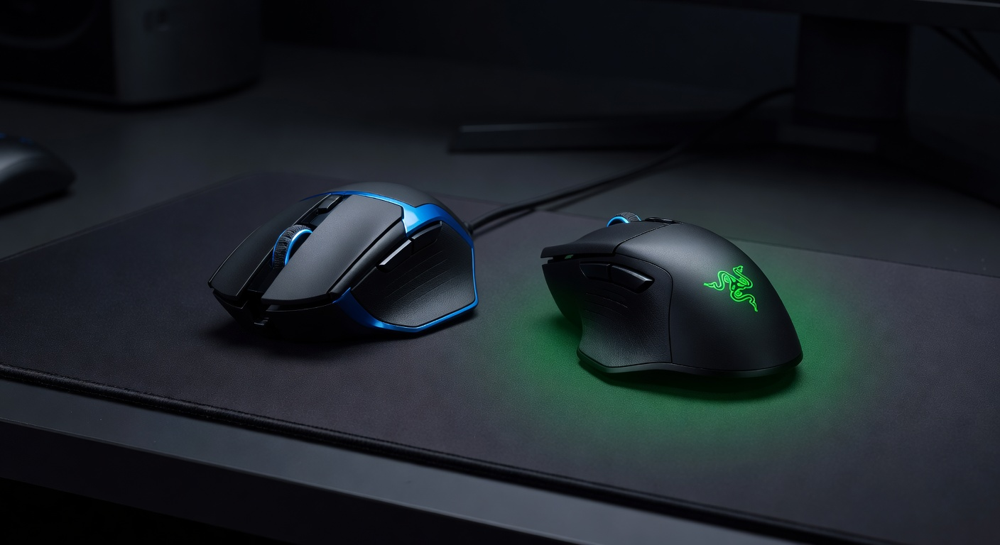

As an Amazon Associate I earn from qualifying purchases. Links below may earn us a commission at no extra cost to you.
Logitech G403 vs Razer DeathAdder V3: Budget Ergonomic vs Ultralight Competitive
Both are right-handed ergonomic mice. Both use excellent optical sensors. Both have 6 programmable buttons. But at $20 apart, they represent very different philosophies: the Logitech G403 is the reliable, proven, budget-friendly pick for gamers who want solid performance without overpaying. The Razer DeathAdder V3 is 28 grams lighter, uses Razer's current best sensor, and carries a Speedflex cable engineered for minimal drag. This comparison tells you exactly which ergonomic gaming mouse belongs on your desk.

Logitech G403 HERO
~$50
87g · HERO 25K · 1000Hz · Rubber cable
VS
Razer DeathAdder V3
~$70
59g · Focus Pro 30K · 1000Hz · Speedflex
Quick Verdict
G403 for budget builds; DeathAdder V3 for competitive FPS where weight matters
At $50, the Logitech G403 is one of the best value ergonomic gaming mice available — reliable HERO 25K sensor, comfortable right-handed shape, and an optional 10g weight for players who prefer heavier mice. At $70, the Razer DeathAdder V3 is one of the lightest ergonomic mice ever made (59g) with Razer's top-tier Focus Pro 30K sensor and a Speedflex cable that feels nearly wireless. The $20 premium is worth paying if you're a competitive FPS player who can feel the weight difference in fast flicks. For most gamers — especially those who prefer a heavier mouse or have a tighter budget — the G403 delivers 90% of the performance at 70% of the price.
Head-to-Head: Category by Category
Weight & Feel
Razer DeathAdder V3 (59g)
The DeathAdder V3 is 28 grams lighter than the G403 — that's a 32% weight reduction. At 59 grams, it's among the lightest ergonomic mice ever released. The difference is immediately noticeable when lifting the mouse: the V3 feels almost hollow compared to the G403's more substantial 87g. For competitive FPS players who rely on large, sweeping arm movements (low DPI, big swipes), lighter weight reduces fatigue and allows faster repositioning. For players who prefer wrist aiming at high DPI, or who actually like heavier mice for stability, the G403's weight is not a disadvantage. Notably, the G403 ships with an optional 10g removable weight — you can add it to reach 97g for those who want even more heft.
Sensor Performance
Razer DeathAdder V3 (Focus Pro 30K)
The Focus Pro 30K has a higher DPI ceiling (30,000 vs 25,600), but in practice both sensors perform flawlessly at the 400–1600 DPI range used by the vast majority of gamers. Both sensors have zero acceleration, zero smoothing, and essentially perfect tracking on virtually any surface. The real-world sensor gap between HERO 25K and Focus Pro 30K is negligible for gaming purposes — both are top-tier. The DeathAdder V3 also claims better lift-off distance calibration and optical surface detection, which matter for mousepad-specific tracking. At most gaming sensitivities, either sensor will never be your limiting factor.
Cable Quality
Razer DeathAdder V3 (Speedflex)
Razer's Speedflex cable is noticeably more flexible and lighter than the G403's standard rubber cable. It kinks less, creates less drag on the mousepad, and adds minimally to the mouse's effective weight during movement — it's the closest a wired cable comes to feeling wireless. The G403's rubber cable is functional but stiffer, especially in cold temperatures, and adds some drag. The difference matters most to competitive players who use wide arm sweeps and notice cable pull. For casual gamers, both cables work fine — the G403's stiffer cable is a non-issue in typical use.
Shape & Ergonomics
Tie — depends on hand size
Both are right-handed ergonomic mice with comfortable thumb rests, but their proportions differ. The DeathAdder V3 is slightly larger, designed for medium-to-large hands, with a more pronounced hump at the rear of the shell that cradles palm grippers well. The G403 has a more modest arch and fits a wider range of hand sizes — it works well for both palm and claw grip. The DeathAdder V3's shape is widely considered one of the most comfortable ever designed, built on decades of the DeathAdder legacy. The G403 is a more neutral design that's reliable for most hands without being exceptional. Try the DeathAdder V3 if you have larger hands; either works for medium hands.
Click Feel & Switches
Razer DeathAdder V3 (optical switches)
The DeathAdder V3 uses Razer's Gen-3 optical switches, which register via light beam rather than physical contact — zero debounce delay (0.2ms vs traditional 1–4ms), no double-click issue over time, and an estimated 90-million-click lifespan. The G403 uses traditional mechanical switches rated at 50 million clicks. Both feel tactile and responsive in gaming, but the V3's optical switches have a slight edge in click latency and long-term reliability. For fast-clicking games (clicker-type games, rapid-fire mice in FPS) or anyone who has experienced double-click issues with mechanical mice, the optical switches are a meaningful upgrade.
Value for Money
Logitech G403 (~$50)
At $50, the G403 is one of the best value propositions in gaming mice. HERO 25K sensor, 6 programmable buttons, optional weight system, comfortable ergonomic shape, and Logitech's build quality. The DeathAdder V3 is the better competitive tool at $70 — but the $20 premium buys you primarily weight reduction and a better cable, which most casual and semi-competitive gamers won't notice. If you're building a budget gaming setup or don't play competitive FPS, the G403 is the smarter buy. If you're equipping a competitive FPS build and own a mousepad worthy of a $70 mouse, the DeathAdder V3 is absolutely worth it.
Spec Comparison
| Spec | Logitech G403 HERO | Razer DeathAdder V3 |
|---|---|---|
| Price | ~$50 | ~$70 |
| Weight | 87.3g (+ optional 10g) | 59g |
| Sensor | HERO 25K Optical | Focus Pro 30K Optical |
| DPI Range | 100 – 25,600 | 100 – 30,000 |
| Polling Rate | 1000Hz | 1000Hz (4000Hz w/ dongle) |
| Switches | Mechanical (50M clicks) | Optical Gen-3 (90M clicks) |
| Cable | 2.1m rubber | 1.8m Speedflex |
| Buttons | 6 programmable | 6 programmable |
| Hand Orientation | Right-handed ergonomic | Right-handed ergonomic |
| RGB | Yes (logo) | Yes (logo + underglow) |
| Wireless Option | G403 Wireless available | DeathAdder V3 Pro available |
4 Key Differences
1
Weight: 59g vs 87g
The DeathAdder V3 is 28g lighter — a 32% reduction. For competitive FPS players using low DPI and wide arm sweeps, this reduces fatigue and speeds up repositioning. For higher DPI wrist aimers or players who prefer a more substantial feel, the G403's weight is a feature, not a flaw. The G403's optional removable weight system lets you add 10g if desired.
2
Switches: Optical vs Mechanical
Optical switches (DeathAdder V3) register via light beam — 0ms debounce, no double-click issues, 90M click lifespan. Mechanical switches (G403) have 1-4ms debounce delay and 50M click lifespan. For most gaming this difference is invisible, but optical switches matter for rapid clicking and long-term reliability. G403 owners occasionally encounter double-click issues after 1-2 years; the V3's optical switches eliminate this.
3
Cable: Speedflex vs Rubber
Razer's Speedflex cable is dramatically more flexible and lighter than the G403's standard rubber cable. It adds almost no drag to mouse movement — the closest wired mice get to wireless feel. For players who have tried premium paracord cables to reduce drag, the V3's Speedflex provides that same benefit stock. The G403's rubber cable is adequate but noticeably stiffer, especially when new.
4
Price: ~$50 vs ~$70
The $20 gap is meaningful at this price tier. The G403 is half the cost of top-tier wireless mice and provides excellent sensor performance for the price. The V3's $70 premium is justified for competitive gamers who notice weight and cable drag — but not for everyone. For budget setups or casual gaming, that $20 is better saved or spent elsewhere.
Which Should You Buy?
Logitech G403 HERO
~$50
Best for: Budget builds · Casual to semi-competitive · Players who prefer heavier mice · Mixed gaming
🛒 Check Price on Amazon
See All Mouse Picks →
Razer DeathAdder V3
~$70
Best for: Competitive FPS · Low DPI arm aimers · Ultralight enthusiasts · Optical switch preference
🛒 Check Price on Amazon
See All Mouse Picks →
More Mouse Guides & Comparisons
Frequently Asked Questions
Yes — the G403 HERO remains one of the best value ergonomic gaming mice at ~$50. The HERO 25K sensor performs flawlessly at practical gaming DPI settings, the shape fits a wide range of hands, and Logitech's build quality is consistently reliable. It's not the lightest or the flashiest, but for budget gaming builds or anyone who doesn't need the latest ultralight design, it's a strong pick. Its main weakness relative to newer mice is mechanical switches and a stiffer cable, neither of which is a dealbreaker at this price.
It depends entirely on how you aim. Low DPI players (400–800 DPI) using broad arm movements across a large mousepad will feel the weight difference more — lighter mice reduce fatigue over long sessions and allow faster direction changes. High DPI wrist aimers moving the mouse small distances will notice less of a difference. A study by RTINGS found weight matters most below 70g, where players using low sensitivity settings can move significantly faster. Above 80g, some players actually prefer the additional stability. Know your play style before deciding.
The base DeathAdder V3 reviewed here is wired only. There's a wireless version called the DeathAdder V3 Pro ($149.99, 63g) with HyperSpeed 2.4GHz wireless and optional 4000Hz polling via the HyperPolling Wireless Dongle. If wireless is important to you, the V3 Pro is the direct upgrade — it adds wireless capability while keeping the same exceptional shape, sensor, and optical switches. The base V3's Speedflex cable is flexible enough that many users don't find wired a meaningful limitation.
For MOBA and RTS games, the Logitech G403 is the better value. These genres don't require the ultralight weight advantage of the DeathAdder V3 — you're clicking UI elements and units at slower speeds than competitive FPS. The G403's comfortable shape, reliable sensor, and $50 price point make more sense for these genres. The programmable buttons on both mice work equally well for macro assignments. Save the V3 premium for FPS builds where weight and cable drag actually influence performance.
The DeathAdder V3 (2022) improved significantly over the V2 (2020): the V3 weighs 59g vs the V2's 82g (a 23g reduction), updated to the Focus Pro 30K sensor from the Focus+ 20K, switched to Gen-3 optical switches with 0ms debounce from mechanical, added a thinner Speedflex cable, and subtly refined the shell shape. If you own a V2, the V3 is a meaningful upgrade for competitive play. If you're new to the DeathAdder line, the V3 is the current baseline — no reason to buy the older V2.
Affiliate Disclosure: As an Amazon Associate I earn from qualifying purchases. Prices shown are approximate and may vary.